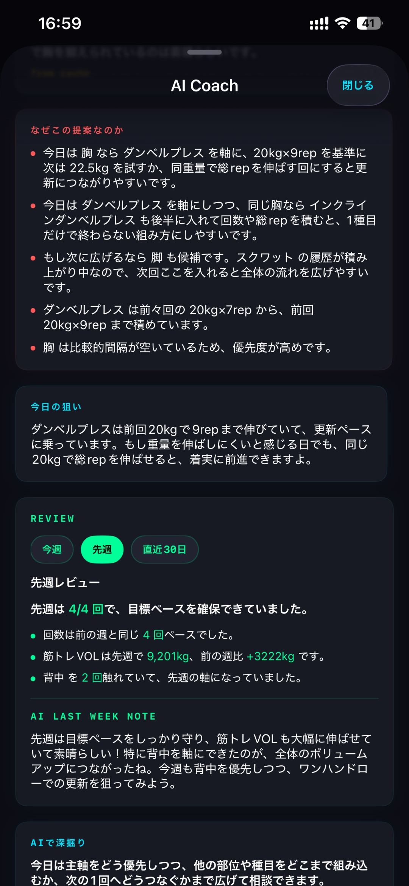
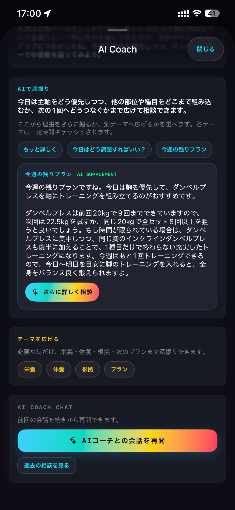
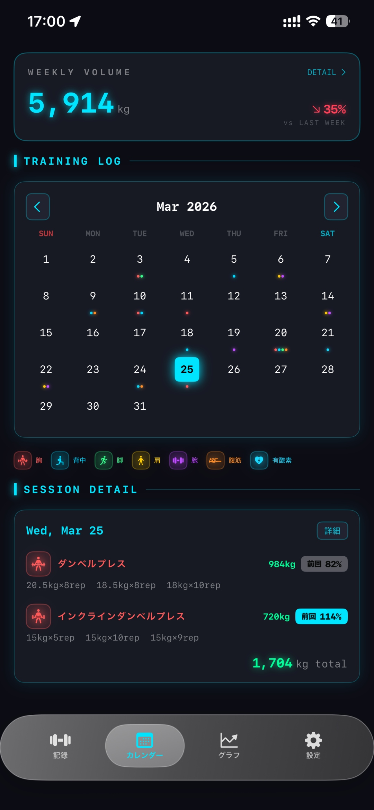
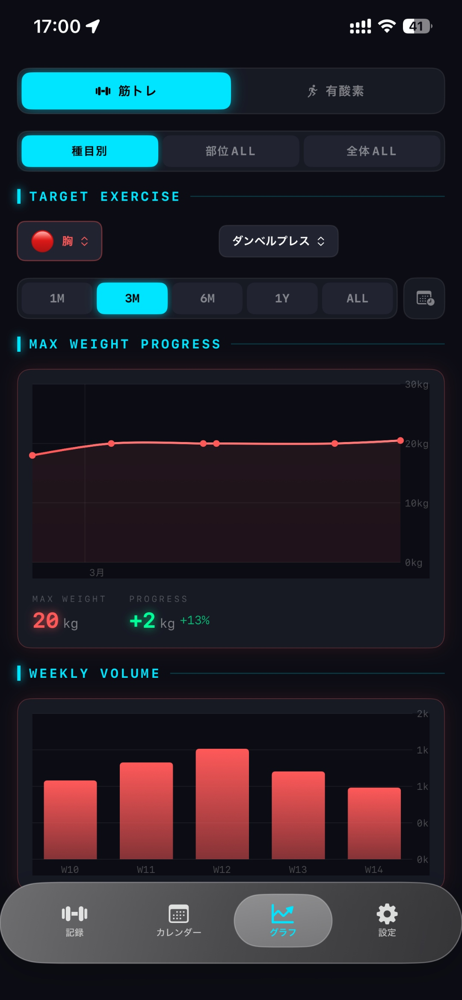

部位ごとの状態が一目でわかる。
胸、背中、脚、肩、腕、腹筋の6部位をリアルタイムに追跡。 前回からの間隔や PEAK 状態が視覚的にわかるから、次に鍛えるべき部位が直感的に判断できます。
TrainNote は筋トレ記録アプリでありながら、 「あなたがどうすれば続く人なのか」を残していくサービスです。 DoubleHub につながると、身体のログは意志のログにもなります。






胸、背中、脚、肩、腕、腹筋の6部位をリアルタイムに追跡。 前回からの間隔や PEAK 状態が視覚的にわかるから、次に鍛えるべき部位が直感的に判断できます。
単なる定型アドバイスではなく、あなたのトレーニング記録と対話をもとに育っていくAIコーチ。 今日の提案、根拠、具体的なアクション、さらに深掘りできるチャットまで。
種目・セット・重量・レップを素早く記録。前回データとの比較が常に見えるから、 成長の実感が得られます。カレンダーで継続パターンも一覧できます。
トレーニングの記録、習慣化、AI コーチとのやり取り。週次レビューで振り返りの精度も上がる。
継続の波、挫折しやすい条件、目標設定との相性。構造化されたインサイトとして連携。
今日は頑張る日か、軽く戻る日か。いまの自分に合う再開の仕方。他の生活データと合わせた最適な提案。